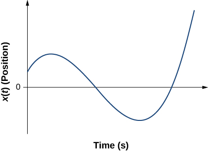

Problems
3.1 Position, Displacement, and Average Velocity
Consider a coordinate system in which the positive x axis is directed upward vertically. What are the positions of a particle (a) 5.0 m directly above the origin and (b) 2.0 m below the origin?
A car is 2.0 km west of a traffic light at t = 0 and 5.0 km east of the light at t = 6.0 min. Assume the origin of the coordinate system is the light and the positive x direction is eastward. (a) What are the car’s position vectors at these two times? (b) What is the car’s displacement between 0 min and 6.0 min?
The Shanghai maglev train connects Longyang Road to Pudong International Airport, a distance of 30 km. The journey takes 8 minutes on average. What is the maglev train’s average velocity?
The position of a particle moving along the x-axis is given by m. (a) At what time does the particle cross the origin? (b) What is the displacement of the particle between and
A cyclist rides 8.0 km east for 20 minutes, then they turn and head west for 8 minutes and 3.2 km. Finally, they ride east for 16 km, which takes 40 minutes. (a) What is the final displacement of the cyclist? (b) What is their average velocity?
On February 15, 2013, a superbolide meteor (brighter than the Sun) entered Earth’s atmosphere over Chelyabinsk, Russia, and exploded at an altitude of 23.5 km. Eyewitnesses could feel the intense heat from the fireball, and the blast wave from the explosion blew out windows in buildings. The blast wave took approximately 2 minutes 30 seconds to reach ground level. The blast wave traveled at 10° above the horizon. (a) What was the average velocity of the blast wave? b) Compare this with the speed of sound, which is 343 m/s at sea level.
3.2 Instantaneous Velocity and Speed
A woodchuck runs 20 m to the right in 5 s, then turns and runs 10 m to the left in 3 s. (a) What is the average velocity of the woodchuck? (b) What is its average speed?

Sketch the velocity-versus-time graph from the following position-versus-time graph.

An object has a position function x(t) = 5t m. (a) What is the velocity as a function of time? (b) Graph the position function and the velocity function.
A particle moves along the x-axis according to . (a) What is the instantaneous velocity at t = 2 s and t = 3 s? (b) What is the instantaneous speed at these times? (c) What is the average velocity between t = 2 s and t = 3 s?
Unreasonable results. A particle moves along the x-axis according to . At what time is the velocity of the particle equal to zero? Is this reasonable?
3.3 Average and Instantaneous Acceleration
Dr. John Paul Stapp was a U.S. Air Force officer who studied the effects of extreme acceleration on the human body. On December 10, 1954, Stapp rode a rocket sled, accelerating from rest to a top speed of 282 m/s (1015 km/h) in 5.00 s and was brought jarringly back to rest in only 1.40 s. Calculate his (a) acceleration in his direction of motion and (b) acceleration opposite to his direction of motion. Express each in multiples of g (9.80 m/s2) by taking its ratio to the acceleration of gravity.
A commuter backs her car out of her garage with an acceleration of 1.40 m/s2. (a) How long does it take her to reach a speed of 2.00 m/s? (b) If she then brakes to a stop in 0.800 s, what is her acceleration?
Assume an intercontinental ballistic missile goes from rest to a suborbital speed of 6.50 km/s in 60.0 s (the actual speed and time are classified). What is its average acceleration in meters per second squared and in multiples of g (9.80 m/s2)?
An airplane, starting from rest, moves down the runway at constant acceleration for 18 s and then takes off at a speed of 60 m/s. What is the average acceleration of the plane?
3.4 Motion with Constant Acceleration
A particle moves in a straight line at a constant velocity of 30 m/s. What is its displacement between t = 0 and t = 5.0 s?
A particle moves in a straight line with an initial velocity of 0 m/s and a constant acceleration of 30 m/s2. If , what is the particle’s position at t = 5 s?
A particle moves in a straight line with an initial velocity of 30 m/s and constant acceleration 30 m/s2. (a) What is its displacement at t = 5 s? (b) What is its velocity at this same time?
(a) Sketch a graph of velocity versus time corresponding to the graph of displacement versus time given in the following figure. (b) Identify the time or times (ta, tb, tc, etc.) at which the instantaneous velocity has the greatest positive value. (c) At which times is it zero? (d) At which times is it negative?

(a) Sketch a graph of acceleration versus time corresponding to the graph of velocity versus time given in the following figure. (b) Identify the time or times (ta, tb, tc, etc.) at which the acceleration has the greatest positive value. (c) At which times is it zero? (d) At which times is it negative?

A particle has a constant acceleration of 6.0 m/s2. (a) If its initial velocity is 2.0 m/s, at what time is its displacement 5.0 m? (b) What is its velocity at that time?
At t = 10 s, a particle is moving from left to right with a speed of 5.0 m/s. At t = 20 s, the particle is moving right to left with a speed of 8.0 m/s. Assuming the particle’s acceleration is constant, determine (a) its acceleration, (b) its initial velocity, and (c) the instant when its velocity is zero.
A well-thrown ball is caught in a well-padded mitt. If the acceleration of the ball is, and 1.85 ms elapses from the time the ball first touches the mitt until it stops, what is the initial velocity of the ball?
A bullet in a gun is accelerated from the firing chamber to the end of the barrel at an average rate of for . What is its muzzle velocity (that is, its final velocity)?
(a) A light-rail commuter train accelerates at a rate of 1.35 m/s2. How long does it take to reach its top speed of 80.0 km/h, starting from rest? (b) The same train ordinarily accelerates opposite to the motion at a rate of 1.65 m/s2. How long does it take to come to a stop from its top speed? (c) In emergencies, the train can accelerate opposite to the motion more rapidly, coming to rest from 80.0 km/h in 8.30 s. What is its emergency acceleration in meters per second squared?
While entering a freeway, a car accelerates from rest at a rate of 2.40 m/s2 for 12.0 s. (a) Draw a sketch of the situation. (b) List the knowns in this problem. (c) How far does the car travel in those 12.0 s? To solve this part, first identify the unknown, then indicate how you chose the appropriate equation to solve for it. After choosing the equation, show your steps in solving for the unknown, check your units, and discuss whether the answer is reasonable. (d) What is the car’s final velocity? Solve for this unknown in the same manner as in (c), showing all steps explicitly.
Unreasonable results At the end of a race, a runner accelerates opposite to the motion from a velocity of 9.00 m/s at a rate of 2.00 m/s2. (a) How far does she travel in the next 5.00 s? (b) What is her final velocity? (c) Evaluate the result. Does it make sense?
Blood is accelerated from rest to 30.0 cm/s in a distance of 1.80 cm by the left ventricle of the heart. (a) Make a sketch of the situation. (b) List the knowns in this problem. (c) How long does the acceleration take? To solve this part, first identify the unknown, then discuss how you chose the appropriate equation to solve for it. After choosing the equation, show your steps in solving for the unknown, checking your units. (d) Is the answer reasonable when compared with the time for a heartbeat?
During a slap shot, a hockey player accelerates the puck from a velocity of 8.00 m/s to 40.0 m/s in the same direction. If this shot takes , what is the distance over which the puck accelerates?
A powerful motorcycle can accelerate from rest to 26.8 m/s (100 km/h) in only 3.90 s. (a) What is its average acceleration? (b) Assuming constant acceleration, how far does it travel in that time?
Freight trains can produce only relatively small accelerations. (a) What is the final velocity of a freight train that accelerates at a rate of for 8.00 min, starting with an initial velocity of 4.00 m/s? (b) If the train can slow down at a rate of , how long will it take to come to a stop from this velocity? (c) How far will it travel in each case?
A fireworks shell is accelerated from rest to a velocity of 65.0 m/s over a distance of 0.250 m. (a) Calculate the acceleration. (b) How long did the acceleration last?
A swan on a lake gets airborne by flapping its wings and running on top of the water. (a) If the swan must reach a velocity of 6.00 m/s to take off and it accelerates from rest at an average rate of , how far will it travel before becoming airborne? (b) How long does this take?
A woodpecker’s brain is specially protected from large accelerations by tendon-like attachments inside the skull. While pecking on a tree, the woodpecker’s head comes to a stop from an initial velocity of 0.600 m/s in a distance of only 2.00 mm. (a) Find the acceleration in meters per second squared and in multiples of g, where g = 9.80 m/s2. (b) Calculate the stopping time. (c) The tendons cradling the brain stretch, making its stopping distance 4.50 mm (greater than the head and, hence, less acceleration of the brain). What is the brain’s acceleration, expressed in multiples of g?
An unwary football player collides with a padded goalpost while running at a velocity of 7.50 m/s and comes to a full stop after compressing the padding and his body 0.350 m. (a) What is his acceleration? (b) How long does the collision last?
A care package is dropped out of a cargo plane and lands in the forest. If we assume the care package speed on impact is 54 m/s (123 mph), then what is its acceleration? Assume the trees and snow stops it over a distance of 3.0 m.
An express train passes through a station. It enters with an initial velocity of 22.0 m/s and accelerates opposite to the motion at a rate of as it goes through. The station is 210.0 m long. (a) How fast is it going when the nose leaves the station? (b) How long is the nose of the train in the station? (c) If the train is 130 m long, what is the velocity of the end of the train as it leaves? (d) When does the end of the train leave the station?
Unreasonable results Dragsters can actually reach a top speed of 145.0 m/s in only 4.45 s. (a) Calculate the average acceleration for such a dragster. (b) Find the final velocity of this dragster starting from rest and accelerating at the rate found in (a) for 402.0 m (a quarter mile) without using any information on time. (c) Why is the final velocity greater than that used to find the average acceleration? (Hint: Consider whether the assumption of constant acceleration is valid for a dragster. If not, discuss whether the acceleration would be greater at the beginning or end of the run and what effect that would have on the final velocity.)
3.5 Free Fall
Calculate the displacement and velocity at times of (a) 0.500 s, (b) 1.00 s, (c) 1.50 s, and (d) 2.00 s for a ball thrown straight up with an initial velocity of 15.0 m/s. Take the point of release to be .
Calculate the displacement and velocity at times of (a) 0.500 s, (b) 1.00 s, (c) 1.50 s, (d) 2.00 s, and (e) 2.50 s for a rock thrown straight down with an initial velocity of 14.0 m/s from the Verrazano Narrows Bridge in New York City. The roadway of this bridge is 70.0 m above the water.
A basketball referee tosses the ball straight up for the starting tip-off. At what velocity must a basketball player leave the ground to rise 1.25 m above the floor in an attempt to get the ball?
A rescue helicopter is hovering over a person whose boat has sunk. One of the rescuers throws a life preserver straight down to the victim with an initial velocity of 1.40 m/s and observes that it takes 1.8 s to reach the water. (a) List the knowns in this problem. (b) How high above the water was the preserver released? Note that the downdraft of the helicopter reduces the effects of air resistance on the falling life preserver, so that an acceleration equal to that of gravity is reasonable.
Unreasonable results A dolphin in an aquatic show jumps straight up out of the water at a velocity of 15.0 m/s. (a) List the knowns in this problem. (b) How high does his body rise above the water? To solve this part, first note that the final velocity is now a known, and identify its value. Then, identify the unknown and discuss how you chose the appropriate equation to solve for it. After choosing the equation, show your steps in solving for the unknown, checking units, and discuss whether the answer is reasonable. (c) How long a time is the dolphin in the air? Neglect any effects resulting from his size or orientation.
A diver bounces straight up from a diving board, avoiding the diving board on the way down, and falls feet first into a pool. She starts with a velocity of 4.00 m/s and her takeoff point is 1.80 m above the pool. (a) What is her highest point above the board? (b) How long a time are her feet in the air? (c) What is her velocity when her feet hit the water?
(a) Calculate the height of a cliff if it takes 2.35 s for a rock to hit the ground when it is thrown straight up from the cliff with an initial velocity of 8.00 m/s. (b) How long a time would it take to reach the ground if it is thrown straight down with the same speed?
A very strong, but inept, shot putter puts the shot straight up vertically with an initial velocity of 11.0 m/s. How long a time does he have to get out of the way if the shot was released at a height of 2.20 m and he is 1.80 m tall?
You throw a ball straight up with an initial velocity of 15.0 m/s. It passes a tree branch on the way up at a height of 7.0 m. How much additional time elapses before the ball passes the tree branch on the way back down?
A kangaroo can jump over an object 2.50 m high. (a) Considering just its vertical motion, calculate its vertical speed when it leaves the ground. (b) How long a time is it in the air?
Standing at the base of one of the cliffs of Mt. Arapiles in Victoria, Australia, a hiker hears a rock break loose from a height of 105.0 m. He can’t see the rock right away, but then does, 1.50 s later. (a) How far above the hiker is the rock when he can see it? (b) How much time does he have to move before the rock hits his head?
There is a 250-m-high cliff at Half Dome in Yosemite National Park in California. Suppose a boulder breaks loose from the top of this cliff. (a) How fast will it be going when it strikes the ground? (b) Assuming a reaction time of 0.300 s, how long a time will a tourist at the bottom have to get out of the way after hearing the sound of the rock breaking loose (neglecting the height of the tourist, which would become negligible anyway if hit)? The speed of sound is 335.0 m/s on this day.
3.6 Finding Velocity and Displacement from Acceleration
The acceleration of a particle varies with time according to the equation . Initially, the velocity and position are zero. (a) What is the velocity as a function of time? (b) What is the position as a function of time?
Between t = 0 and t = t0, a rocket moves straight upward with an acceleration given by , where A and B are constants. (a) If x is in meters and t is in seconds, what are the units of A and B? (b) If the rocket starts from rest, how does the velocity vary between t = 0 and t = t0? (c) If its initial position is zero, what is the rocket’s position as a function of time during this same time interval?
The velocity of a particle moving along the x-axis varies with time according to , where A = 2 m/s, B = 0.25 m, and . Determine the acceleration and position of the particle at t = 2.0 s and t = 5.0 s. Assume that .
A particle at rest leaves the origin with its velocity increasing with time according to v(t) = 3.2t m/s. At 5.0 s, the particle’s velocity starts decreasing according to [16.0 – 1.5(t – 5.0)] m/s. This decrease continues until t = 11.0 s, after which the particle’s velocity remains constant at 7.0 m/s. (a) What is the acceleration of the particle as a function of time? (b) What is the position of the particle at t = 2.0 s, t = 7.0 s, and t = 12.0 s?
Euler's Method in 1 Dimension
Modify the Euler's method code to simulate the situation in Problem 68 for a given velocity. Then using your code, guess a variety of initial jump velocities until you get the desired result. Does this match your theoretical answer?
An object has an oscillatory acceleration given by . Using Euler's method, create a graph of the position vs time function for 15 seconds. Assume it starts at rest at the origin. Use your graph to determine how many oscillations the object will make in that amount of time.
A company's worth is given by . Suppose the change in the company's worth is give by . How much will the company be worth after 30 years? Assume the company's initial worth is 1000 dollars. Use Euler's method to integrate .
In Code Example 3.2, we used code to plot acceleration, velocity, and position vs time all next to each other. Modify the code from the non-constant acceleration rocket example in the last section so that it plots all three of the dynamic variables as in Code Example 3.2. Comment on the results.